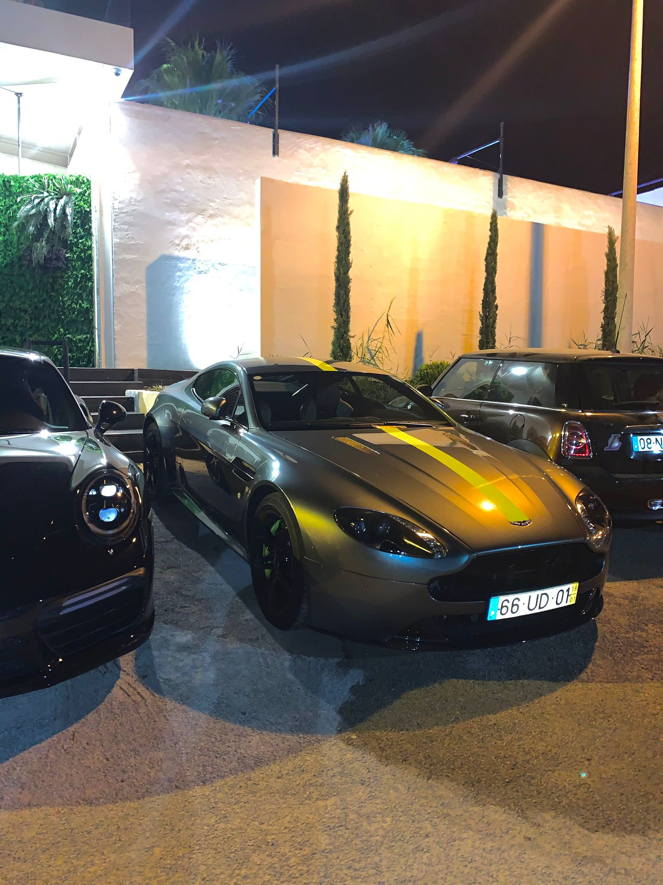

proporcionando uma ligação mais direta entre o condutor e o carro, para uma experiência de condução verdadeiramente envolvente. 3 | Velocidade e Aceleração: Com uma capacidade de atingir 100 km/h em cerca de 3.9 segundos,
o Aston Martin Vantage AMR oferece um desempenho de alto nível, combinando velocidade e agilidade de forma impressionante. 4 | Design: O Vantage AMR apresenta um design elegante e musculoso, com linhas aerodinâmicas que não apenas conferem uma estética impressionante,
mas também contribuem para a estabilidade e o desempenho em altas velocidades. 5 | Interior: Por dentro, o Vantage AMR oferece um ambiente luxuoso e desportivo, com materiais de alta qualidade,
acabamentos personalizáveis e tecnologia de ponta, incluindo um sistema de infoentretenimento avançado e um painel de instrumentos digital. 6 | Experiência de Condução: Cada momento ao volante do Aston Martin Vantage AMR é uma experiência emocionante,
com uma combinação perfeita de potência, agilidade e precisão, garantindo uma ligação íntima entre o condutor e o carro.
Aston Martin Vantage AMR
O Aston Martin Vantage é uma máquina de desempenho de classe mundial, projetada para proporcionar emoções intensas e uma experiência de
condução excepcional tanto em pistas como em estradas. Aqui está um resumo das suas principais características:
1 | Desempenho: Equipado com um motor V8 twin-turbo de 4.0 litros,
o Vantage AMR produz uma potência impressionante de 503 cavalos, oferecendo uma experiência de condução emocionante e dinâmica.
proporcionando uma ligação mais direta entre o condutor e o carro, para uma experiência de condução verdadeiramente envolvente. 3 | Velocidade e Aceleração: Com uma capacidade de atingir 100 km/h em cerca de 3.9 segundos,
o Aston Martin Vantage AMR oferece um desempenho de alto nível, combinando velocidade e agilidade de forma impressionante. 4 | Design: O Vantage AMR apresenta um design elegante e musculoso, com linhas aerodinâmicas que não apenas conferem uma estética impressionante,
mas também contribuem para a estabilidade e o desempenho em altas velocidades. 5 | Interior: Por dentro, o Vantage AMR oferece um ambiente luxuoso e desportivo, com materiais de alta qualidade,
acabamentos personalizáveis e tecnologia de ponta, incluindo um sistema de infoentretenimento avançado e um painel de instrumentos digital. 6 | Experiência de Condução: Cada momento ao volante do Aston Martin Vantage AMR é uma experiência emocionante,
com uma combinação perfeita de potência, agilidade e precisão, garantindo uma ligação íntima entre o condutor e o carro.